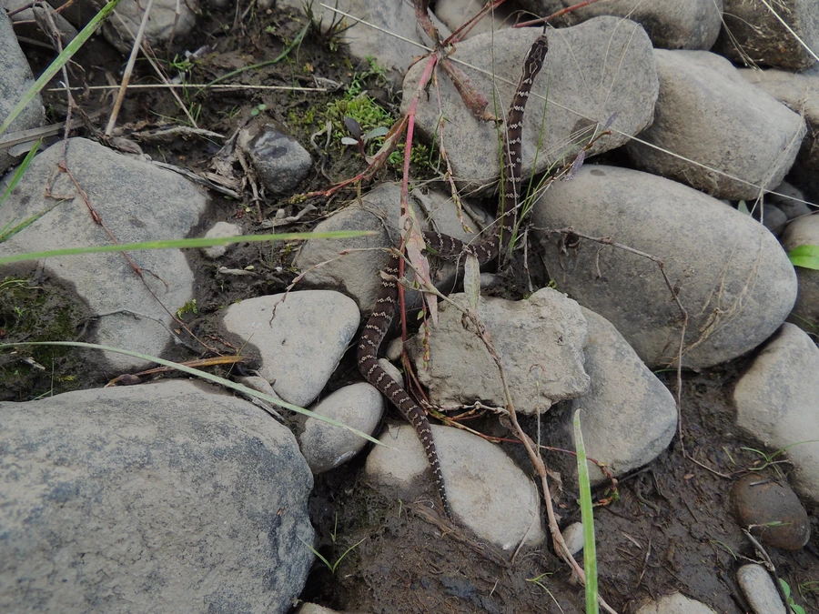

爬行动物 · 动物界
中介蝮 Gloydius intermedius

中国北方与西北常见的毒蛇，体色灰褐带深色斑块，栖息于山地灌丛和草地，被咬后须立即就医，需保持警惕。
- 分类
- 门脊索动物门纲爬行纲目有鳞目科蝰科属亚洲蝮属
- 栖息环境
- 山地草原、半荒漠、灌丛、石堆与农田边缘
- 地理分布
- 中国北方和西北地区，以及蒙古、俄罗斯部分地区
- 保护级别
- IUCN 无危（LC）；中国未列入国家重点保护名录
物种志
中介蝮体长 50–70 厘米，身体较粗壮，头部呈三角形，吻端略尖，眼后有深褐色条纹；体色以灰褐、黄褐或暗褐色为主，背部有两行深色圆形或椭圆形斑块，斑块边缘镶浅色，腹部灰白并散布深色小点。它的体色与栖息地的岩石和枯草十分接近。
它分布于中国北方和西北地区的山地、草原与半荒漠，也见于蒙古和俄罗斯部分地区，栖息于灌丛、石堆、草地和农田边缘，多在晨昏活动，捕食鼠类、蜥蜴、蛙类和昆虫。它是卵胎生蛇类，雌蛇妊娠约 4–5 个月后产下 10–20 条幼蛇。中介蝮毒性较强，被咬后局部肿胀、疼痛并可能出血，须立即就医；它捕食鼠类，对草原生态有一定益处，野外遇到时应绕行。
形态与习性
- 食性鼠类、蜥蜴、蛙类和昆虫
- 体长50–70 cm
- 寿命约 10–15 年
- 繁殖卵胎生，妊娠 4–5 个月，每胎 10–20 条
- 活动节律晨昏活动，白天藏在石缝草丛
- 毒性毒性较强，被咬后须立即就医
趣味知识
- 中介蝮的体色与岩石、枯草十分接近，静止时很难被发现。
- 它主要分布在中国北方和西北的山地草原与半荒漠地区。
- 中介蝮是卵胎生蛇类，雌蛇一次可产下十余条幼蛇。